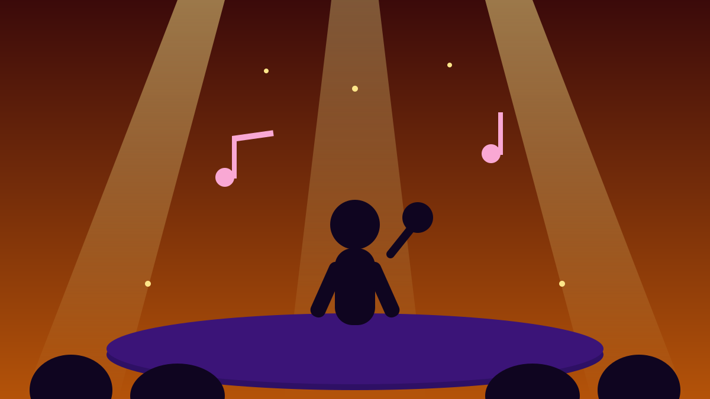

U2 Comeback! Single Baru + Album + Tur Stadion 2027 🎸
📅 17 Oktober 2026⏱️ 1 menit baca
1 / 6

🎬 HIBURAN
Legenda rock Irlandia itu balik lagi — dan langsung gaspol
Single baru, album baru, tur stadion baru, semuanya dalam satu minggu. Geser →
2 / 6
🎵
Single barunya
“The Greatest Show on Earth” rilis Kamis (15/10/2026) sebagai single ketiga dari album baru mereka. Lagu berdurasi 5 menit 34 detik ini ditulis U2 bersama Brian Eno dan diproduseri Jacknife Lee — tentang sepasang kekasih yang berjuang menjaga kepercayaan satu sama lain.
3 / 6
🎬
Videonya nyindir diri sendiri
Video musiknya disutradarai kolaborator lama mereka, Anton Corbijn, dan difilmkan di gurun California. Konsepnya menyindir band itu sendiri sebagai kultus religius — di mana perempuan yang melakukan semua pekerjaan berat.
4 / 6
💿
Albumnya: 9 tahun penantian berakhir
Album studio ke-16, “Carnaval de Luz”, rilis 13 November 2026 lewat Island Records. Ini album materi baru pertama U2 sejak “Songs of Experience” (2017) — 9 tahun lalu. Isinya 12 lagu bertema spiritualitas, persahabatan, kebebasan, dan ketahanan, termasuk “Torn” yang menampilkan Dolly Parton.
5 / 6
🌍
Tur stadion 2027, mulai dari Amerika Latin
Bersamaan dengan single itu, U2 mengumumkan tur “Carnaval De Luz presents: The Greatest Show On Earth”. Pembuka: Mexico City 23 & 26 Februari 2027, São Paulo 10 & 12 Maret, dan Buenos Aires 23 & 25 Maret — dengan Beck sebagai pembuka. Tanggal Eropa dan Amerika Utara menyusul. Presale lewat U2.com mulai 19 Oktober, penjualan umum 22 Oktober. Ini tur stadion pertama mereka sejak Joshua Tree Tour berakhir di Mumbai pada Desember 2019.
6 / 6
🤔
Efeknya ke lo apa?
Bono sendiri bilang ke Rolling Stone, lagu ini “mungkin lagu terbaik kami dalam waktu yang sangat lama” — sampai jadi alasan dia bertahan di band. Buat lo yang playlist-nya isinya lagu 2000-an, ini momen nostalgia yang valid banget: band yang udah 50 tahun berkarya (dibentuk di Dublin, 1976) masih ngerilis karya baru. Cek dulu singlenya di platform streaming favorit lo.
👆 geser kartunya
Gimana menurut lo?
🤖 Artikel ini disusun dengan bantuan AI dari berbagai sumber publik dan telah disunting manusia.